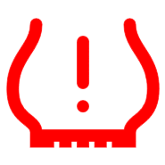
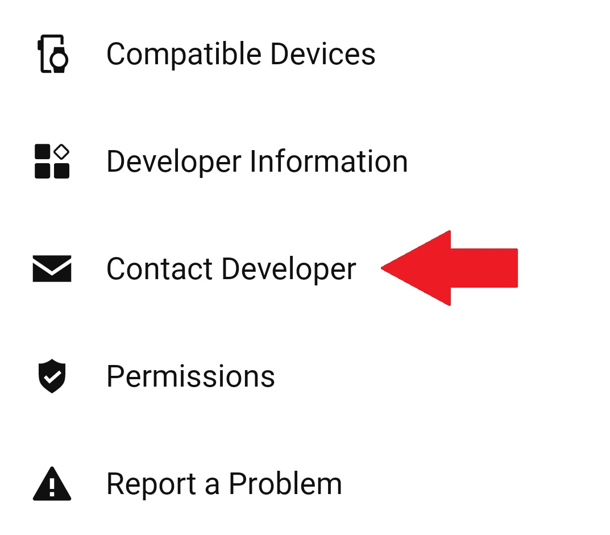

Frequently asked questions
SKS AIRSPY FAQ
Common questions about SKS AIRSPY on Garmin, including numeric sensor IDs, wheel positions, pressure targets, alerts, sensor sets and recording.
General questions
Which SKS products are supported?
This version supports SKS AIRSPY sensors with ANT+ support. See the AIRSPY sensor listings and this app's Garmin Store listing for details.
Do I need to pair or connect the sensor?
No. TubeWitch reads AIRSPY ANT+ broadcasts using the numeric sensor IDs entered in settings. Do not pair the sensors with Garmin.
Where do I set Front / Rear positions and pressure targets?
Enter the sensor ID in Front Sensor ID or Rear Sensor ID, and configure its Low Target / High Target in the matching TubeWitch Sensor Set. A target of 0 disables that individual limit.
Are the pressure readings accurate?
TubeWitch displays pressure decoded directly from the SKS AIRSPY ANT+ broadcast.
Why is there a ? or X next to pressure?
"?" marks the last pressure as stale because a recent sensor broadcast has not been received. "X" means the sensor timed out during an activity and stopped searching for that position. Touch the field to rescan on supported touchscreen devices.
Which Garmin devices are supported?
Use TubeWitch for SKS AIRSPY in the Garmin Store for compatible devices, the latest app version and release notes.
Capabilities and behavior
Can I use one sensor or multiple bikes?
Yes. Choose Front Only or Rear Only for a single sensor. Save up to five named bikes or wheelsets and manually select a set, use Auto Switch, or use Touch to Switch on supported devices. One sensor set is displayed at a time.
Can I use AIRSPY and TyreWiz or AIRMAX sensors?
Use the separate TubeWitch apps for the respective sensor families. Each sensor type is displayed in its own app's data field.
Will it record tire pressure to my Garmin activity?
Yes, when enabled in TubeWitch settings. Recording options include pressure, alarm status, stale-data indicators and sensor-set information. Reboot Garmin after changing Activity Recording settings.
Can I customize the display and alerts?
Yes. Configure labels, colors, layouts, per-sensor pressure targets, alarm delays, reset delays and additional repeats. Audible, popup and vibration outputs depend on your Garmin device.
Setup Questions
What do I enter as the sensor ID?
Enter the numeric ID printed on the AIRSPY sensor, such as 21760. Do not enter a Bluetooth address or BLE name.
What happens if I change PSI, bar or kPa?
Targets are interpreted in the selected unit, and saved numbers are not automatically converted. Update the targets in all configured sets after changing units and reboot Garmin.
Why are my settings not being saved?

General settings-saving tips
Even when Garmin is working normally, the steps below can help if settings do not save reliably.
First, make sure the TubeWitch data field is visible on your Garmin device before changing settings in the Connect IQ mobile app.
If sensor IDs or other settings are not being saved by the Garmin Connect IQ mobile app, try entering one sensor ID first and saving immediately before entering the second. Garmin's save process can be inconsistent when many settings are changed at once.
Support
Where do I get TubeWitch Support?
Use Garmin's in-app Contact Developer link to contact TubeWitch support. Include your Garmin model, app version and a description of the issue.

How do I contact support?
Use the Garmin Connect IQ mobile app.
- Open the TubeWitch for SKS AIRSPY Garmin Store page.
- Tap Open in App.
- Scroll to the bottom of the TubeWitch app page, then tap Contact Developer.